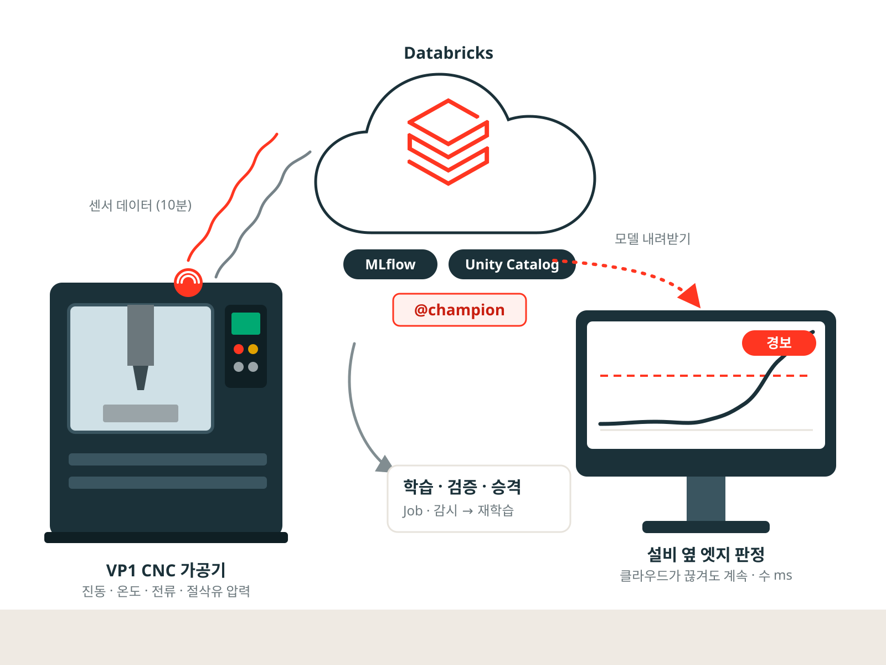

×
HL만도 MLOps 핸즈온 랩 · VP1 설비 PHM
고장 24시간 전 경보, 설비 옆에서 판정까지¶
모델과 데이터가 준비된 상태에서 Genie Code를 작업 동료로 두고, 피처 테이블 → MLflow 실험 → 학습 파이프라인 → 배치·실시간·엣지 배포 → 감시·재학습 → 대시보드·Genie Agent까지 MLOps 한 바퀴를 직접 돌립니다.
- Genie Code 준비 + 6단계 실습
- ML팀 · 역할 2가지
- 가상 공장 VP1 · CNC 24대 합성 데이터
- 2026-11-17(화) 09:00–12:00

오늘의 이야기¶
HL만도 가상 부품공장 VP1의 가공 라인에서 CNC 스핀들이 갑자기 고장 나 라인이 여러 번 멈췄습니다. 설비보전팀이 ML팀에 요청합니다.
설비보전팀 "고장 24시간 전에 알려 주세요. 그리고 판정은 설비 옆에서 해야 합니다. 공장 망은 밖과 끊겨 있고, 판정이 늦으면 안 됩니다."
여러분은 ML팀입니다. 데이터 확인부터 현장 배포와 운영까지 직접 진행합니다. 다른 부서는 요청하고 결과를 쓰는 쪽으로만 등장합니다.
ML Engineer코드 · 파이프라인 · CI/CD
.py 모듈과 학습 파이프라인 Job, 번들, Azure DevOps 연동까지 코드로 다룹니다. ML Engineer 심화 표시가 있는 내용을 함께 봅니다.
Citizen ML Engineer노트북 · 화면 · Genie Code
준비된 노트북을 실행하고 화면에서 실험 비교·모델 등록·배포 결과를 확인합니다. 막히면 Genie Code에게 코드 설명과 오류 수정을 맡깁니다. 기본 단계만 따라가도 한 바퀴가 완성됩니다.
실습 여정¶
Genie Code가 이 실습의 데이터·모델 규칙을 알고 일하도록 설정합니다.
실습 폴더 규칙(AGENTS.md)과 내 스킬·인스트럭션을 설정하고, 첫 대화로 공유 데이터를 살펴봅니다. 워크스페이스 전체 설정은 바꾸지 않습니다. 이후 모든 Step에서 Genie Code를 작업 동료로 씁니다.
모두기본
약 20분
고장 전조가 데이터에 보이는지 확인하고 피처 테이블을 만듭니다.
센서 오류값과 정지 구간을 걸러 내고, "이 설비가 평소보다 얼마나 높은가"를 나타내는 22개 피처를 모듈 하나(phm_features.py)로 만들어 UC 피처 테이블로 저장합니다.
모두기본
약 15분
모델 3개를 학습해 MLflow에서 비교하고, Unity Catalog에 등록합니다.
경보 문턱값을 모델 안에 함께 저장하고, 가장 좋은 모델에 @champion 별칭을 붙입니다. 기존 보유 모델을 등록하는 방법도 봅니다.
모두기본
약 30분
.py 파일 4개를 순서대로 실행하는 Job으로 만들고, 검증을 통과해야만 승격되게 합니다.
기존 학습 코드를 플랫폼에 올리는 방법 그대로입니다. 같은 Job을 번들로 선언하고 Azure DevOps로 배포하는 흐름은 진행팀이 설명합니다.
모두 실습번들·CI/CD는 ML Engineer 심화
약 30분
같은 @champion 모델을 세 가지 방식으로 배포합니다.
배치 추론으로 위험 설비 순위를 뽑고, Model Serving을 호출하고, 엣지 시뮬레이터 앱에서 클라우드가 끊겨도 현장 판정이 계속되는 것을 봅니다.
모두기본
약 35분
신규 소재 투입 후 성능이 떨어진 것을 감지하고, 재학습해 엣지까지 새 모델로 바꿉니다.
구간별 성능을 지표 테이블에 남기고, Step 3의 Job을 새 데이터로 다시 돌려 검증을 통과한 모델만 @champion이 됩니다.
모두기본
약 15분
ML팀은 대시보드로 모델을 지켜보고, 설비보전팀은 Genie Agent로 결과를 묻습니다.
코드로 정의한 ML Engineer 대시보드(모델 성능·검증 이력·현장 경보)를 만들고 Genie Code로 위젯을 더합니다. 설비보전팀이 "지금 위험한 설비 5대"를 물을 수 있는 Genie Agent를 만들고 벤치마크로 확인합니다.
모두기본
약 17분
아키텍처¶
원천 (공유 · 읽기 전용)
61~90일 신규 소재 구간
피처 · 실험
Unity Catalog · 내 스키마
배포
활용
Genie Code는 이 모든 단계에서 노트북·Catalog·Job 화면 옆에 열어 두고 씁니다. 페이지마다 Genie Code로 해 보기 상자에 그대로 붙여 넣을 프롬프트를 넣었습니다.
아젠다¶
| 시간 | 구간 | 내용 |
|---|---|---|
| 09:00–09:15 | 오프닝 | Databricks ML/LLMOps 소개, 시나리오, 완성본 미리 보기 (이 동안 진행팀이 엔드포인트·앱 준비) |
| 09:15–09:35 | 0) Genie Code 시작하기 | 실습 폴더 규칙, 내 스킬·인스트럭션, 첫 대화 |
| 09:35–09:50 | 1) 데이터 확인과 피처 | 고장 전조 확인, UC 피처 테이블 |
| 09:50–10:15 | 2) 모델 실험과 등록 | MLflow 실험 비교, UC 등록, @champion |
| 10:15–10:25 | 휴식 | |
| 10:25–10:50 | 3) 학습 파이프라인 자동화 | .py 4개를 Job으로 (실습), 번들·Azure DevOps (설명) |
| 10:50–11:20 | 4) 배포: 배치·실시간·엣지 | 배치 추론, Model Serving, 엣지 시뮬레이터 앱 |
| 11:20–11:35 | 5) 성능 감시와 재학습 | 신규 소재 투입 후 성능 하락 → 재학습 → 엣지 업데이트, Data quality monitoring 시연 |
| 11:35–11:52 | 6) 현업에 전달 | ML Engineer 대시보드, 설비보전팀용 Genie Agent |
| 11:52–12:00 | 마무리 | 승인 지점, 공식 과정과 비교, 구축 착수 체크리스트, Q&A |
시작할 준비가 되셨나요?¶
- 워크스페이스에 로그인할 수 있습니다.
- 진행자가 알려 준 내 스키마 이름(영문, 예:
juyeon)을 알고 있습니다. - 사전 준비의 노트북 가져오기와 컴퓨트 연결을 마쳤습니다.
- 오른쪽 위 Genie Code 아이콘을 눌러 패널이 열리는지 확인했습니다.